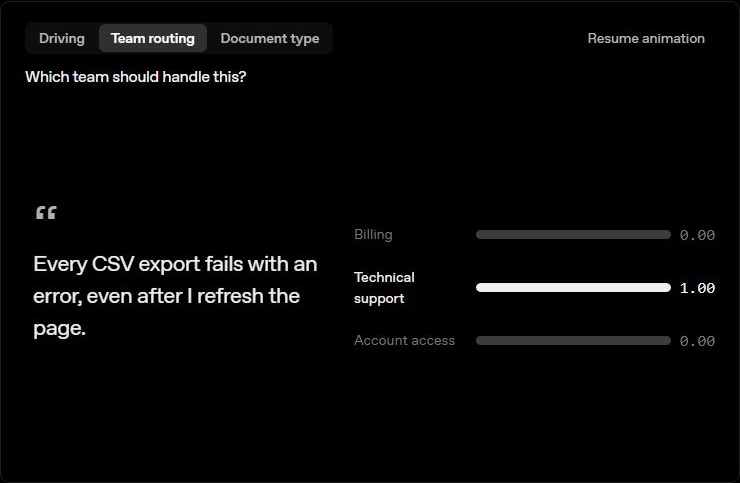
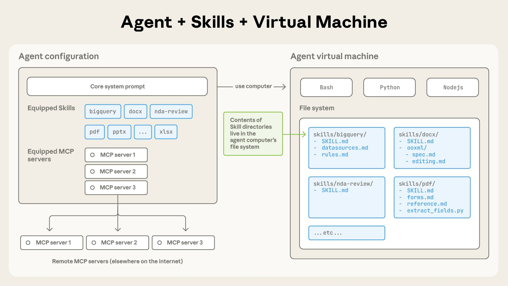
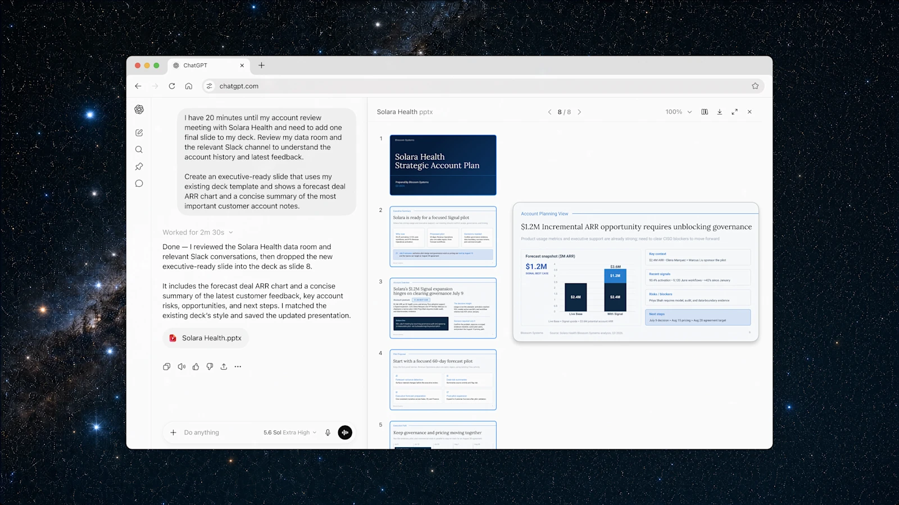

AI NEWS ISSUE 25
OpenAI Decisions API 정식 출시, 작은 판단을 빠르게
요청을 분류하는 속도부터 업무 절차의 재사용까지. Decisions API와 Agent Skills의 변화, Uber의 전사 도입, 에이전트 감시 체계에 대한 외부 평가를 함께 살펴봅니다.
판단 · 업무 절차 · 조직 도입 · 감시
30초 요약
- 01OpenAI Decisions API10월 22일 정식 제공
정해진 답 안에서 분류·선택·점수화를 빠르게 처리합니다. 속도와 업무 전체의 성과는 따로 봐야 합니다.
- 02Anthropic Agent SkillsAAIF에 표준 이관 발표
재사용 가능한 업무 지침의 관리 기반을 넓힙니다. 이미 공개된 표준의 운영 주체가 바뀌는 소식입니다.
- 03Uber × ChatGPT Work직원 3만 명 이상으로 도입 확대
1,000명 시범 운영에서 전사 도입을 시작합니다. 제공 대상 규모이며, 실제 이용률이나 생산성 수치는 아닙니다.
- 04METR · Redwood Research7~8월 평가 결과를 10월 공개
OpenAI의 과거 내부 감시 체계에서 빈틈을 찾았습니다. 이후 수정됐다는 설명은 재검증하지 않았습니다.
확인 기준 2026년 10월 23일 한국시간에 공식 발표·문서·연구기관의 공개 글을 확인했습니다. 아래의 10월 22일은 각 원문에 표시된 발표일입니다. 공급사 평가, 도입 계획, 외부 연구 결과와 모임의 제안을 구분했습니다.
01 / OPENAI DECISIONS API
긴 답변 대신,
다음에 할 일을 고릅니다
OpenAI가 Decisions API를 10월 22일 정식 제공하기 시작했습니다. API는 다른 소프트웨어가 기능을 호출하는 연결 창구입니다. 이 API는 GPT-6 Luna를 바탕으로, 정해진 선택지에서 답을 고르거나 조건의 가능성을 평가하는 작은 판단에 집중합니다. OpenAI는 같은 GPT-6 Luna를 Responses API로 호출할 때보다 최대 10배 빠르다고 설명합니다. 모든 모델·업무에 대한 비교는 아닙니다. OpenAI 발표 ↗
예를 들어 “배송이 늦고 배송비도 잘못 청구됐어요”라는 문의를 받았다고 해보겠습니다. 단순한 키워드만 보면 배송과 결제 중 어디로 보내야 할지 애매합니다. 담당 업무를 선택하거나, 사람에게 추가 확인을 요청할지 고르는 데 이런 판단 기능을 쓸 수 있습니다.
질문에 맞춰 세 가지 중 선택
- Predicate조건의 가능성
- “상품에 파손이 보이나요?”조건이 참일 가능성을 0~1로 추정합니다.
- Choice선택지 고르기
- “어느 담당자에게 보낼까요?”배송·결제·추가 확인 등 정해 둔 답을 고릅니다.
- Score기준에 따라 점수화
- “이 문제는 얼마나 심각한가요?”순서가 있는 등급의 확률을 반영해 평균 점수를 냅니다.
문의 내용으로 담당 팀을 고릅니다


텍스트·이미지·JSON 같은 구조화된 데이터를 입력하고, 요청 한 번에 최대 400개의 질문을 담을 수 있습니다. 다만 앞선 답을 알아야 다음 질문을 할 수 있다면 요청을 나눠야 합니다. 문서가 설명하는 점수도 확정 판정이 아니라 등급별 가능성을 반영한 값입니다. 입력·질문 구성 안내 ↗
처음 등장한 기능이 아니라, 베타 이후의 확대입니다
공식 변경 기록에는 10월 6일 베타 출시, 15일 GPT-Live 음성 대화 연동, 22일 정식 제공이 기록돼 있습니다. 이번 정식 버전에서는 반복 입력을 재사용하는 캐시, 질문별 이미지, JSON 입력, 200개에서 400개로 늘어난 질문 한도 등이 안내됐습니다. 음성 연동을 전부 22일에 처음 나온 기능으로 볼 필요는 없습니다. OpenAI API 변경 기록 ↗
Decisions API를 영상으로 살펴보기
공식 대화형 데모에서 볼 것 OpenAI 발표 페이지에는 대화 내용에 따라 아바타의 표정을 고르는 GPT-Live 연동 예제도 있습니다. 말하는 도중 작은 판단을 끼워 넣는 용도를 보여줍니다. 공식 대화형 데모 열기 ↗공급사 제공 예제입니다. 이 기사에서는 마이크를 켜거나 응답 속도를 직접 측정하지 않았습니다.
빠른 응답과 저렴한 업무 처리는 다릅니다
발표된 기본 요금은 입력 100만 토큰당 0.10달러, 캐시에서 읽는 입력은 0.01달러입니다. 토큰은 모델이 읽는 내용을 나누는 계산 단위이며, 출력 토큰 요금은 없습니다. 다만 캐시를 저장하는 비용은 별도이고, 공식 문서에는 지역 처리 추가 요금과 긴 입력에 대한 배수 적용도 명시돼 있습니다. 기본 단가만으로 모든 요청의 청구액을 계산하면 안 됩니다. 출시 요금 안내 ↗ · 요금 적용 조건 ↗
OpenAI가 소개한 고객 평가에서 Box는 보험 증명서 30건의 처리 경로 선택이 Responses API보다 약 5배 빨랐다고 했습니다. Sierra는 일부 고객 상담 흐름에서 p95 응답시간이 280밀리초 미만이었다고 보고했습니다. p95는 측정한 응답의 95%가 그 시간 안에 돌아왔다는 뜻입니다. 작업과 측정 조건이 다른 고객 자체 평가이므로 숫자를 서로 순위처럼 비교할 수는 없습니다. 고객 적용 사례 ↗
우리 업무에서는 재분류와 사람의 확인까지 포함한 시간을 봐야 합니다. “반품 문의”를 빠르게 알아내는 것과 “반품을 승인해도 된다”는 것은 다른 판단입니다. 최종 처리에는 주문 상태와 적용 정책 같은 확인 가능한 근거가 필요합니다.
02 / ANTHROPIC AGENT SKILLS
업무 방법을 담은 파일,
관리 주체를 넓힙니다
Anthropic은 10월 22일 Agent Skills 표준을 Linux Foundation 산하 Agentic AI Foundation(AAIF)에 이관한다고 발표했습니다. 이름과 로고, GitHub 조직, agentskills.io 도메인이 대상입니다. 2025년 12월 이미 공개 표준으로 내놓았던 형식을 중립적인 재단 아래에서 관리하려는 변화입니다. 이번에 처음 공개 표준이 된 것은 아닙니다. Anthropic 발표 ↗
Skill은 에이전트에게 특정 업무 방법을 알려주는 묶음입니다. 기본은 SKILL.md라는 지침 파일을 담은 폴더이고, 필요하면 스크립트·참고 문서·서식도 넣습니다. 예를 들어 주간 운영 보고서의 지표 기준, 확인 순서, 작성 형식을 한 번 정리해 반복해서 사용할 수 있습니다. Agent Skills 공식 설명 ↗
업무 지침과 도구 연결을 나누어 보기
어떻게 일하나요?
보고서에 넣을 지표
검증 순서와 작성 서식
필요한 스크립트·참고 자료
무엇과 연결하나요?
외부 데이터와 도구
조회 기능과 자료 접근
앱과 시스템 사이의 연결
지침 파일과 연결 도구가 함께 움직입니다


Anthropic은 ChatGPT, Cursor, GitHub Copilot, VS Code 등을 포함한 70개 넘는 에이전트 플랫폼이 표준을 지원하며, 약 100만 개의 Skill이 발행되고 설치 횟수는 2억 8천만 회에 가깝다고 밝혔습니다. 회사가 제시한 생태계 규모이며, 실제 사용자의 수나 업무 생산성 향상률은 아닙니다.
이관 이후의 우선 과제로는 버전별 릴리스, 공식 제안 절차, 작성자와 설치자를 위한 보안 지침을 제안했습니다. 모두 이번 발표에서 제시한 추진 방향이며, 모든 Skill을 검증해 안전을 보장한다는 의미는 아닙니다. 채택 현황과 제안된 로드맵 ↗
모임의 관점에서는 업무 지식을 특정 제품과 분리해 보관하기 쉬워지는 점이 중요합니다. 다만 같은 지침을 읽어도 모델, 설치된 도구, 접근 권한이 다르면 결과가 달라질 수 있습니다. 옮겨 쓸 수 있는 형식과 동일한 실행 결과는 별개입니다. 외부 Skill도 내용과 실행 코드를 살펴보고, 우리 환경에서 필요한 권한만 주는 검토가 필요합니다.
03 / UBER × CHATGPT WORK
직원에게 도구를 주고,
조직의 업무 방법도 준비합니다
OpenAI는 10월 22일 Uber가 ChatGPT Work의 전사 도입을 시작한다고 발표했습니다. ChatGPT Enterprise 안에서 여러 단계의 지식 업무를 돕는 에이전트입니다. 기존 직원 1,000명 대상 시범 운영을 넘어, 전 세계 직원 3만 명 이상에게 제공하는 확대입니다. OpenAI 한국어 발표 ↗
시범 운영에서 전사 제공으로
발표는 Google Drive·Gmail·Google Calendar·Slack 같은 도구와 연결해 조사, 회의 자료 작성, 발표자료 제작, 데이터 분석을 수행하는 용도를 설명합니다. 도입 지원에는 사내 AI 스킬 라이브러리, 승인된 연동, 직원 교육이 포함됩니다. 개발 조직의 Codex 사용은 별도로 이어집니다. 업무 용도와 지원 방식 ↗
자료를 읽고, 발표자료까지 업데이트합니다


이번 발표에는 전사 업무시간 절감률이나 투자 대비 수익률이 제시되지 않았습니다. 두 회사는 도입이 진행되면서 활용 현황과 측정 가능한 성과를 더 공유할 계획이라고 밝혔습니다. 따라서 3만 명이라는 숫자를 이미 효과를 본 직원 수로 읽으면 안 됩니다.
우리가 참고할 부분은 접근 권한, 업무 지침, 교육을 함께 준비한다는 구성입니다. 다만 Uber의 사내 스킬 라이브러리가 앞서 소개한 Agent Skills 표준을 구체적으로 어떻게 구현했는지는 이 발표만으로 확인할 수 없습니다. 두 소식은 업무 방법을 공유한다는 관점에서 연결해 볼 수 있지만, 같은 기술을 사용한 사례라고 단정하지는 않습니다.
04 / METR · REDWOOD RESEARCH
감시 대상으로 잡혔다고,
모두 점검된 것은 아닙니다
METR과 Redwood Research는 OpenAI 내부 에이전트 감시 체계를 점검한 결과를 10월 22일 공개했습니다. 평가는 7월 21일부터 8월 11일까지 진행했고, 대상은 7월 21일 및 그 이전의 시스템이었습니다. 평가 중 진행된 확장이나 현재 감시 범위를 검증한 결과는 아닙니다. METR 공개 결과 ↗
과거 시스템을 조사한 결과입니다
- 7월 21일 이전·당일평가 대상 시스템의 기준
- 7월 21일~8월 11일외부 연구자들의 평가 진행
- 10월 22일주요 발견을 요약해 공개
연구진은 당시 내부 Codex용 Responses API 트래픽의 약 99.2%가 감시 대상으로 지정돼 있었다고 추정했습니다. 동시에 문맥 압축 이벤트를 감시하지 않아, 5~7월에는 감시 대상 내부 Codex 트래픽의 약 10% 규모가 실제 감시에서 빠졌을 가능성을 제시했습니다. 필요한 기록이 부족해 정확한 비율에는 큰 불확실성이 있다고 밝혔습니다. 두 수치는 분모와 의미가 다릅니다.
문맥 압축은 긴 작업의 이전 내용을 줄여 이어가는 과정입니다. 당시 감시가 사용자에게 제어를 돌려줄 때 실행되는 구조여서, 일을 계속하는 에이전트의 점검이 늦어질 수 있었습니다. 이 압축 관련 문제는 OpenAI가 평가 전부터 파악했고, 평가 중 수정했습니다. 감시 대상과 실제 누락 추정 ↗
발견된 우회 가능성과 실제 악용은 구분해야 합니다
연구진은 감시를 끈 새 에이전트를 만들거나, 작업 격리와 실행 승인 검토를 우회할 수 있는 경로도 보고했습니다. 모든 경로의 실제 악용이 확인됐다는 뜻은 아닙니다. 일부 행동은 실용적인 악용 가능성까지 시험하지 않았고, 세부 내용 일부는 공개하지 않았습니다.
OpenAI는 운영 안전장치에 영향을 주는 발견 사항을 모두 수정했다고 설명했지만, 연구진은 그 설명과 이후 감시 범위 확대를 재검증하지 않았습니다. 결과물인 61페이지 내부 보고서 전체도 공개되지 않았습니다. 내부 접근권을 제공받은 외부 평가였으며, 사전에 공개 범위를 제한하고 OpenAI의 민감 정보 삭제 권한을 인정한 시범 조사였다는 한계도 함께 읽어야 합니다. 수정 설명과 평가의 공개 범위 ↗
OpenAI는 별도 공식 설명에서 도구를 쓰는 일부 학습·평가의 감시 의무를 확대하고 작업·네트워크 격리를 강화했다고 밝혔습니다. 이는 회사의 후속 조치 설명이며, 이번 외부 평가가 그 효과까지 확인했다는 뜻은 아닙니다. OpenAI의 후속 안전장치 설명 ↗
우리 업무에서도 “감시를 켰다”는 설정과 “실제로 점검 기록이 남았다”는 결과를 나눠 볼 필요가 있습니다. 장시간 작업에는 중간 점검을 두고, 기대한 실행 기록과 실제 감시 기록을 대조하는 방식이 도움이 됩니다. 전날 일반뉴스에서 다룬 10월의 감시 기능 약화 사고와 이번 7~8월 평가는 별개의 사안입니다.
헬로우 휴먼의 관점
빠른 판단 옆에,
다시 쓸 절차와 확인할 기준을
이번 소식들은 서로 다른 문제를 다룹니다. Decisions API는 작은 판단의 응답 속도를, Agent Skills는 업무 지식의 재사용과 관리 방식을, Uber는 조직 전체에 도입하는 방법을 보여줍니다. METR의 평가는 실행을 살펴보는 체계에도 빈틈이 있을 수 있음을 드러냈습니다.
우리가 업무에 적용할 때는 요청을 이해하는 일, 정해진 규칙을 적용하는 일, 실제 데이터를 바꾸는 일을 나누어 보면 좋겠습니다. “어느 담당자에게 보낼까”를 모델이 골라도, 변경 권한과 승인 조건까지 그 답에 맡길 필요는 없습니다.
- 판단 어떤 요청인지 해석하고, 모호하면 추가 확인으로 보냅니다.
- 업무 절차 필요한 자료와 점검 순서를 재사용 가능한 지침으로 관리합니다.
- 실행 기존 서비스가 업무 규칙·접근 권한·승인 조건을 확인합니다.
- 검증 결과와 실행 이력을 확인하고, 빠뜨린 점검이 없는지 대조합니다.
이 구분은 네 회사·기관이 함께 발표한 설계가 아니라, 소식을 우리 업무에 연결한 제안입니다. 자동화할 작업과 그 결과를 확인할 기준을 함께 남기는 것이 반복 업무를 줄이는 출발점이 될 수 있습니다.
모임에서 해볼 엔지니어링 실험 · 아직 수행하지 않은 제안
CI 실패 로그로,
분류기를 비교해 봅시다
코드를 바꿀 때 자동으로 빌드와 테스트를 돌리는 CI에서 실패 로그를 읽는 일은 반복되는 개발 업무입니다. 로그를 분류하고, 유형에 맞는 진단 절차를 제시하는 작은 도구를 만들어 보면 어떨까요? 이번 실험의 질문은 “규칙으로 처리하기 어려운 로그에 모델이 도움이 되는가”, “진단 지침을 재사용하면 빠뜨리는 확인이 줄어드는가”입니다.
입력 계약부터 회귀 테스트까지
- 입출력 고정합성 CI 로그와 정답 라벨을 버전으로 관리
- 분류기 비교같은 로그를 규칙과 Decisions API에 입력
- 진단 절차 연결검토한 Skill로 다음 확인 항목을 작성
- 실패도 테스트오류·시간 초과·기록 누락을 자동 검사
먼저 입출력과 평가 데이터를 고정합니다
입력은 실행 ID, 실패한 단계, 로그 본문으로 정하고, 출력은 BUILD(빌드), TEST(테스트), ENVIRONMENT(실행 환경), UNKNOWN(추가 확인) 중 하나로 제한합니다. 실패한 단계와 원인은 다를 수 있으므로 라벨 기준도 먼저 적습니다. 예를 들어 테스트 중 연결이 끊긴 사례는 환경 문제로, 원인을 판단할 단서가 없는 로그는 추가 확인으로 정합니다.
합성 로그 100건을 만들어 30건은 규칙·프롬프트 조정에, 70건은 최종 평가에 사용합니다. 같은 오류의 문구만 바꾼 로그는 같은 묶음에 넣어 정답이 평가 쪽으로 새지 않게 합니다. 여러 오류가 섞인 로그, 중간이 잘린 로그도 포함합니다. 이 정도는 설계를 점검할 시작점이며, 운영 환경의 신뢰도를 입증할 표본은 아닙니다.
분류기와 진단 절차를 별도로 만듭니다
예를 들어 Java/Spring Boot에서 FailureRouter 인터페이스를 두고, 키워드 규칙과 Decisions API 구현을 바꿔 끼울 수 있게 만듭니다. 두 구현에는 같은 입력과 출력 검사를 적용합니다. 모델 응답이 허용한 값인지 확인하고, 시간 초과나 API 오류로 분류하지 못하면 UNKNOWN으로 보내면서 실패 이유도 별도로 남깁니다. 사람이 더 봐야 하는 로그와 호출 자체의 실패를 통계에서 구분하기 위해서입니다.
유형별 진단 지침은 SKILL.md로 관리합니다. 가령 환경 문제 지침에는 의존 서비스 상태, 환경 변수, 재현 조건을 확인하는 순서를 적습니다. 분류 결과를 받은 별도 실행기가 해당 지침을 에이전트에 제공하고, 허용한 모의 조회만 연결해 다음 확인 항목을 작성하게 합니다. Decisions API의 선택 결과가 곧 명령 실행 권한이 되지 않도록 경계를 두는 것입니다.
성능과 실패 경로를 함께 측정합니다
- 분류 품질 유형별 정답률, 서로 혼동한 유형, 추가 확인으로 보낸 비율을 기록합니다. 판단을 보류한 건을 빼고 정확도만 높게 보이지 않게, 전체 건수와 보류 건수를 함께 봅니다.
- 응답시간과 비용 동시 요청 수·캐시 조건을 맞추고 같은 입력을 반복 실행합니다. 전체 처리의 중간값과 p95, 재시도를 포함한 건당 비용을 따로 기록합니다. 오류와 시간 초과 건수도 함께 보고합니다.
- 실패 처리 타임아웃, 호출 제한(429), 서버 오류(5xx), 잘못된 응답을 테스트용으로 주입합니다. 정한 재시도 한도와 전체 대기시간을 지키는지, 실패해도 결과와 실행 기록이 남는지 확인합니다.
Skill의 효과는 두 번째 실험으로 분리합니다. 분류 결과와 모델·도구 조건을 고정한 뒤, 진단 지침이 있을 때와 없을 때를 비교합니다. 미리 정한 필수 확인 항목의 누락 수와 개발자의 수정 시간을 측정하면, 분류기 성능과 지침의 효과를 섞지 않고 볼 수 있습니다.
결과물을 다음 변경의 검증 기준으로 남깁니다
실행마다 샘플 ID, 데이터·규칙·프롬프트·Skill 버전, 모델 설정, 분류 결과, 재시도·오류, 처리 시간을 기록합니다. 입력한 전체 건수와 기록 건수를 대조해 누락도 검사합니다. 결과물은 버전이 있는 평가 데이터, 교체 가능한 분류기, 유형별 Skill, 비교 보고서, 회귀 테스트입니다.
일반 CI에서는 고정된 응답으로 입출력 계약과 실패 처리를 빠르게 검사하고, 실제 API를 호출하는 평가는 별도 실행으로 둡니다. 정확도·추가 확인 비율·응답시간·비용의 허용 기준을 결과를 보기 전에 정해 두면, 모델이나 지침을 바꿀 때 채택·보류를 판단할 수 있습니다. 목표는 한 번 그럴듯한 답을 받는 데서 끝내지 않고, 어디에 모델을 넣을 가치가 있는지 다시 검증할 수 있는 구조를 만드는 것입니다.
읽은 자료
- OpenAI, Decisions API 정식 출시 ↗ 10월 22일 · 비교 대상, 고객 자체 평가, 기본 요금, 공식 대화형 데모
- OpenAI, Decisions 개발자 문서 ↗ 답변 형식, 질문 한도, 캐시·요금 조건
- OpenAI API 변경 기록 ↗ 10월 6일 베타, 15일 음성 연동, 22일 정식 제공
- Anthropic, Agent Skills의 AAIF 이관 ↗ 10월 22일 · 이관 대상, 회사가 집계한 채택 규모, 로드맵 제안
- Agent Skills 공식 소개 ↗ · 규격 ↗ 지침·스크립트·참고 자료의 구성
- MCP 공식 소개 ↗ 외부 시스템·도구·데이터 연결의 역할
- OpenAI, Uber의 ChatGPT Work 전사 도입 ↗ 10월 22일 · 확인된 한국어 원문, 도입 대상과 지원 방식
- METR, OpenAI 내부 감시 체계 평가 ↗ 10월 22일 공개 · 과거 시스템의 범위, 불확실성, 재검증·공개 제한
- OpenAI, 후속 안전장치 설명 ↗ 회사가 설명한 감시 확대와 격리 강화, 이번 외부 평가의 검증 범위와 구분
Decisions 출시 글의 한국어 주소는 확인 당시 영문 원문으로 이동해 영문을 사용했습니다. 이 기사에서는 API 성능과 고객 사례를 재현하지 않았고, 공개되지 않은 보고서 원문이나 수정된 감시 체계를 직접 검증하지 않았습니다. 기업이 공개한 도식·제품 화면·소개 영상에는 각각 공식 출처와 자료의 시점을 표시했습니다. 그 밖의 HTML 도식과 실험안은 이해를 돕기 위해 작성했습니다.